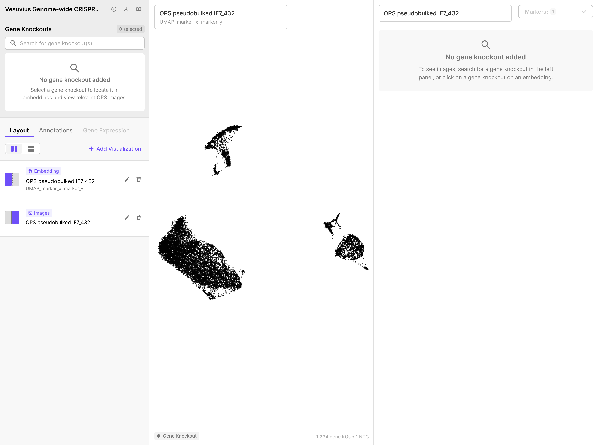
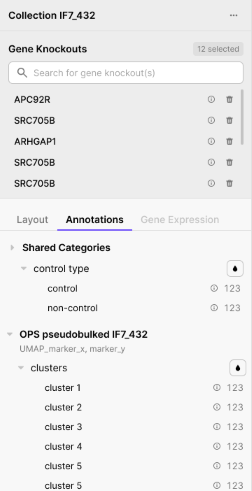
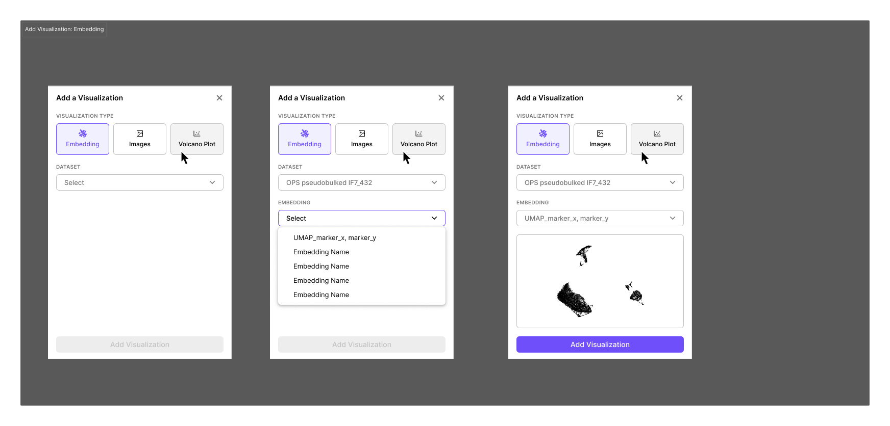
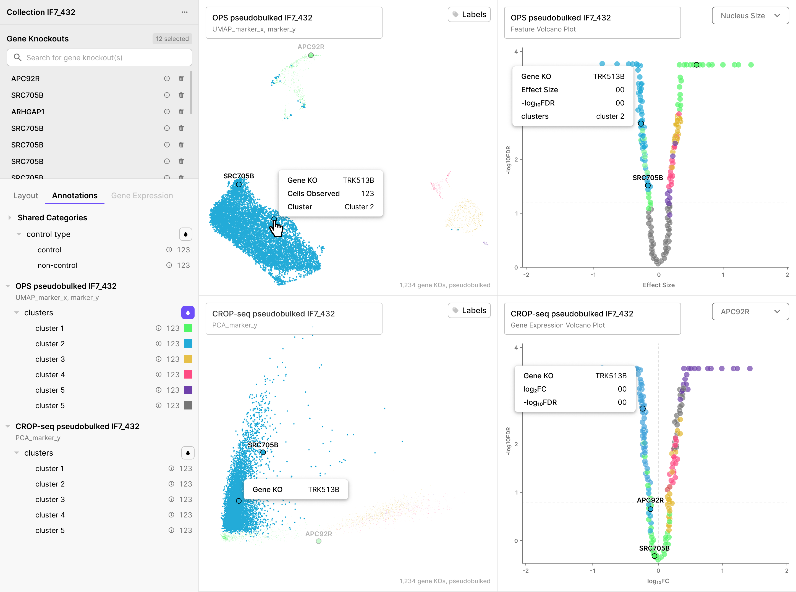

OPS Explorer Quickstart¶
A short, visual tour of the viewer for first-time users. For full reference detail, see Visualizing Data in the OPS Explorer.
Contents¶
Tour of the Viewer¶
From the All Data page or a Collection Detail Page, click Explore on any dataset row to open the viewer full-screen.
The viewer is split into two regions:

| Region | What it does |
|---|---|
| Left Panel (control center) | Search gene knockouts, manage panels, apply coloring |
| Visualization Panels (right side, 1–4 panels) | Show embeddings, fluorescence images, and volcano plots |
Hovering or clicking a dot in any visualization panel highlights the same gene knockout across every other open panel simultaneously.
Note: In this viewer, each dot is one gene knockout - not a cell. This is different from CellxGene, where each dot is one cell. Hovering on a dot will show how many cells there are for that gene KO.
Left Panel¶
The left panel has two regions:

Top region - Gene Knockouts
- Search bar - find and add gene knockouts from the collection
- Selected list - each row has an ⓘ (gene info) and a delete button
- Counter in the top-right shows how many knockouts are active
Bottom region - Layout, Annotations, and Gene Expression
- Layout - add, remove, edit, and rearrange panels
- Annotations - color all eligible panels by a categorical annotation (e.g. cluster)
- Gene Expression - color CROP-seq panels by a measured gene's expression level

A ··· menu in the top-right of the left panel opens collection-level actions: View collection details or Download collection.

Visualization Panels¶
The right side of the viewer holds 1–4 panels of four possible types:
| Panel type | Each dot is | Used for |
|---|---|---|
| Embedding (UMAP-style) | One gene knockout | Cluster overview, perturbation grouping |
| Images | (No dots - image grid) | Browsing 4 channel cell crops per knockout |
| OPS Feature Volcano | One gene knockout | Finding KOs with the largest morphological effect |
| CROP-seq Gene Expression Volcano | One measured transcript (~20K dots) | Finding differentially expressed genes for a chosen condition |

Important: The CROP-seq Gene Expression Volcano is the only panel where dots are not gene knockouts. Annotation coloring and selection-from-list do not apply to it.
Essential Actions¶
| Action | What to do |
|---|---|
| Open a dataset in the viewer | Click Explore on the dataset row |
| Select feature for OPS volcano | Feature selector dropdown in top right of volcano panel |
| Find a knockout in the embedding | Type the name in the Search for gene knockout(s) bar |
| See microscopy images for a KO | Add the KO and the Images panel will populate automatically |
| Locate a knockout across all open panels | Hover its name in the Gene Knockouts list, or its dot in any panel |
| Color all panels by cluster | Annotations tab → click ● next to clusters |
| Color CROP-seq panels by gene expression | Gene Expression tab → add a gene → click its ● color icon |
| Open an image at full resolution | Click any image - opens the idetik viewer in a new tab |
| Add a new panel | Layout tab → + Add Visualization |
| Look up gene info | Click ⓘ next to a KO name → Gene Info sidebar |
| See all KOs in a cluster | Click ⓘ next to a cluster in the Annotations tab → Cluster Info sidebar |
| View collection metadata | ··· menu → View collection details |
| Download a collection | ··· menu → Download collection |
Quick Tips and FAQ¶
Why is each dot a "gene knockout" and not a cell? Because the underlying data is aggregated per perturbation: each dot summarizes the average effect across all cells that received that knockout. UMAPs from CellxGene work differently (i.e., one dot = one cell).
Why doesn't annotation color appear on my CROP-seq Gene Expression Volcano? Dots in that panel are measured transcripts, not gene knockouts, so coloring by KO-level annotations doesn't apply. Coloring works on the other three panel types.
Why is the Gene Expression tab grayed out on my OPS panel? Per-gene expression data only exists for CROP-seq datasets. OPS panels show an amber ⚠ Limited badge when a gene expression overlay is active.
How do I tell which feature drives the OPS volcano? The feature selector dropdown is in the top-right of the volcano panel. The selected feature name also appears on the x-axis label.
How do I see images larger than the thumbnails? Click any image in the Images panel. It opens in the idetik viewer in a new browser tab for full-resolution viewing.
Can I undo a change to my panel layout or knockout selection? No, the viewer does not have undo/redo. Re-do the change manually.
Where are images coming from? Each gene knockout shows ~3 representative image crops per imaging marker, chosen by the dataset authors. The CONTROL row at the top is sticky for visual comparison with the KO images.
How many panels can I open at once? Minimum 1, maximum 4. Layout orientation options change based on how many you have open.
Next Steps¶
- Read the full tutorial: Visualizing Data in the OPS Explorer
- Programmatic access: Programmatic Data Access